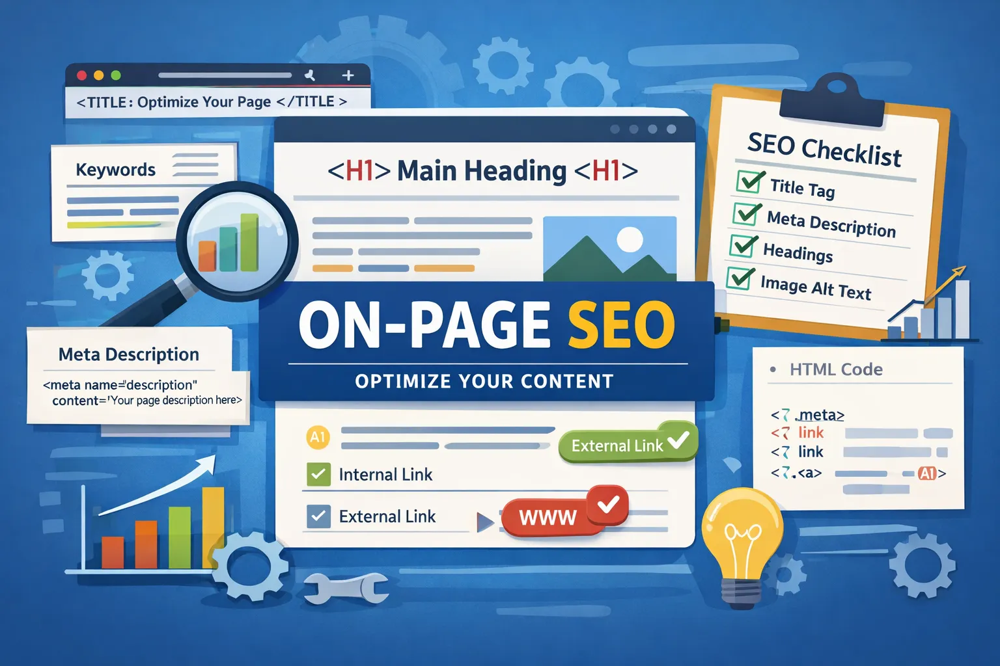

On-Page SEO
On-Page SEO refers to the optimization of individual web pages to improve search engine rankings and user experience. It focuses on content, HTML source code, and page structure.
Why On-Page SEO is Important
- Helps search engines understand page content
- Improves website visibility in SERP
- Enhances user experience and engagement
- Reduces bounce rate
On-Page SEO Checklist
1. Title Tag Optimization
Title tags should be unique, keyword-focused, and under 60 characters.
Example: <title>On-Page SEO Checklist for Beginners</title>
2. Meta Description
Meta descriptions improve click-through rate by summarizing page content.
3. Header Tags (H1–H6)
Proper use of headings improves content structure and readability.
4. Image Optimization
- Use descriptive file names
- Add ALT text
- Compress images (WebP format)
5. SEO-Friendly URL
https://example.com/on-page-seo-guide
6. Internal & External Linking
Internal links improve crawlability. External links add trust and relevance.
7. Canonical Tag
Prevents duplicate content issues.
<link rel="canonical" href="https://example.com/on-page-seo.html">
8. Keyword Cannibalization
Avoid targeting the same keyword on multiple pages.
9. Schema Markup
Helps search engines understand content context.
10. Voice Search Optimization
Use conversational keywords and FAQs.